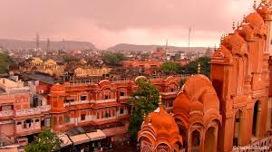
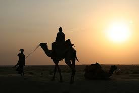
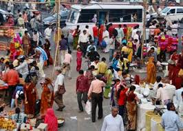
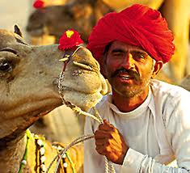

Jaipur-The Pink City
About Jaipur-The Pink City

HISTORY
Jaipur is the famous city and capital of Rajasthan. It was founded on 18 November 1727 by Maharaja Sawai Jai Singh II, the ruler of Amber, after whom the city has been named. Jaipur is known as the Pink City of India because of the colour used exclusively in the walled city. The capital of Rajasthan, Jaipur is rich in history and culture. Here the past comes alive in magnificent forts and palaces. The bustling bazaars of Jaipur, famous for jewellery, fabric and shoes, possess a timeless quality and are surely a treasure-trove for the shoppers.CLIMATE
Jaipur has a semiarid climate under the Koppen climate classification, receiving over 650 millimet0res (26 in) of rainfall annually but most rains occur in the monsoon months between June and September. Temperatures remain relatively high throughout the year, with the summer months of April to early July having average daily temperatures of around 30 °C (86 °F).


DEMOGRAPHICS
As of 2011, Jaipur had a population of 3,073,350. The Population of the Jaipur Metropolitan area is 3,646,590. Jaipur is the 10th largest city of India according to census of 2011. The Hindu population accounts for 74%, Muslim 20%, Jains 4.5%, Christians 0.5%, and Sikhs 1.0%. While 47.49% people lived in rural areas, 52.51% lived in urban areas. The overall literacy rate for the district was 76.44%. 87.27% males and 64.63% females were literate.CULTURE
Jaipur has a number of important cultural sites. Cultural centres like Jawahar Kala Kendra and Ravindra Manch have helped promote the culture of the state of Rajasthan. Albert Hall Museum (Government Central Museum) hosts several arts and antiquities. There is a government museum at Hawa Mahal and an art gallery at Viratnagar. The Town Hall (Old Vidhan Sabha Bhawan) is proposed to be converted into a museum. There are statues depicting Rajasthani culture around the city.
